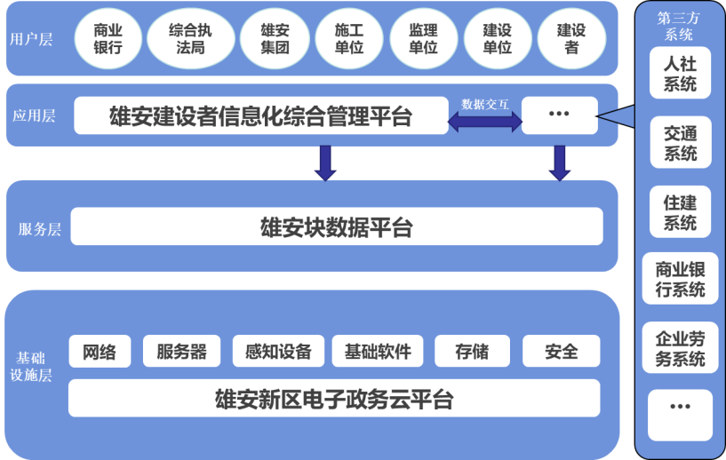

产品介绍
系统概述：
中国银行建设者信息化综合管理平台是针对建筑行业人员流动大，工作灵活等行业用工特点，应用信息和生物识别技术，结合政府主管部门对各类从业人员的管理模式而研发的用于记录分析施工现场人员实名制履职情况的高效准确的管理系统。
该系统通过采集并严格控制企业基本信息、资质信息、人员信息的准确性、唯一性、完整性，解决业务处理过程中数据来源不统一、不专业的问题。通过构建涵盖政府、企业、银行和务工人员功能应用的建设领域务工人员信息化综合管理平台，满足政府对项目工程建设中拖欠工资行为的预防，满足企业对工程人员管理、考勤管理、工资管理等方面的需求，满足对务工人员的合法权益形成有效保障并提供专属的金融服务。
系统特点：
- 与银行系统深入联系，直接对接银行系统，做到真正意义上的银企直联。
- 系统以个人信息为依托，通过实名制管理，为薪资发放提供依据，为解决薪资纠纷提供证据。
- 通过工资专用账户管理，将建设者工资直接发至其工资卡，从根本上避免薪资纠纷，杜绝拖欠工资、虚假工资、遗漏、代领等现象，使工资拖欠和恶意讨薪难两类问题得到有效解决，保障建筑工人合法权益。
系统建设目标：
- 为政府监督服务，提供数据支撑，实现源头预防
- 为企业管理服务，健全数据信息，打造高效管理
- 为建设者服务，完善个人保障，践行弱有所扶
系统架构：
